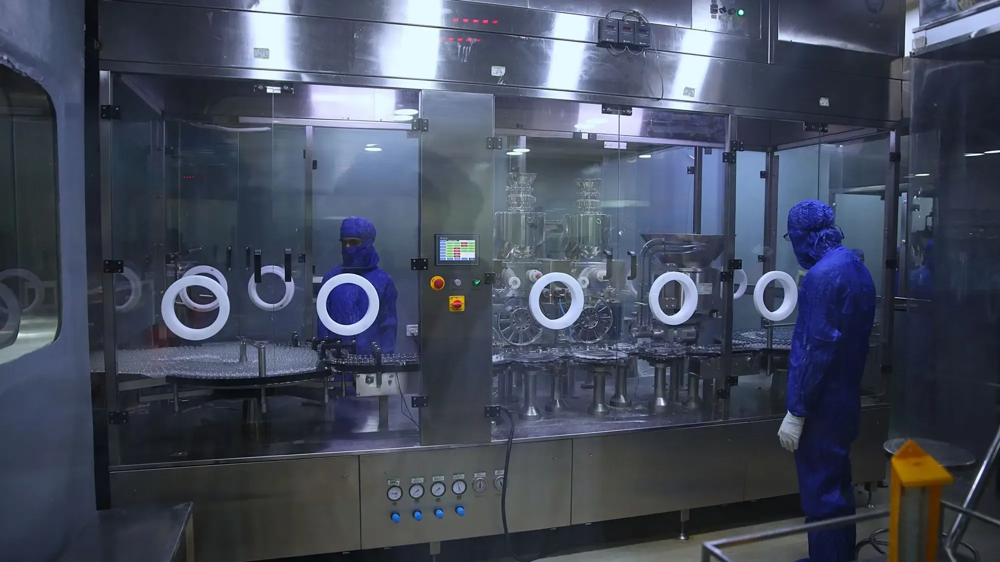

Controlled areas in view. Utilities understood.
Pharmaceutical sites depend on utility equipment that must keep running. Video AI helps keep designated areas clear, and sensor analysis helps maintenance teams spot change early.
The supporting plant matters. As much as the production room.
Utility equipment such as HVAC motors, pumps, air compressors and chillers offers useful opportunities for monitoring mechanical behaviour and investigating developing performance issues.
Utility areas and equipment rooms also need to stay clear and appropriately accessed. We describe applications and monitoring support here; this page makes no claim about regulatory validation or compliance of any system.
Keep designated equipment and utility areas in view.
Monitor configured restricted-area entry and site-specific activity around utilities, equipment rooms and selected areas. Walkways and access routes can also be watched for obstructions.
- Entry into an equipment room or utility area
- Obstructions in a walkway or access route
- Activity in a selected area outside scheduled hours
Understand developing faults in utility equipment.
Analyse motor and pump measurements to identify unusual vibration, electrical or thermal behaviour, and give maintenance teams observations to investigate.
Relevant inputs
- Vibration
- Motor current
- Temperature
- Pressure
- Flow
Representative assets
- HVAC motors
- Utility pumps
- Air compressors
- Chillers
Building and process systems are connected too.
HVAC, utilities and monitoring equipment increasingly share networks with other site systems. Clarity about what is connected and who can reach it is a sensible starting point for any new data feed.
- 01
Asset visibility
A maintained view of the building and utility controllers that monitoring will read from.
- 02
Remote and vendor access
Defined routes for service providers who maintain utility and HVAC systems.
- 03
Segmentation
Separation between utility monitoring and other site networks.
Start with one utility. Or one area to keep clear.
- 01
01
Understand
Choose the utility asset or area, and note which readings and cameras are already available.
- 02
02
Develop
Set the motor and pump baselines or the area and access rules, and name the contact for each alert.
- 03
03
Validate
Check behaviour against agreed scenarios with your maintenance and facilities teams.
- 04
04
Deploy
Connect to your dashboard and communication channels, then refine as requirements change.
A typical first project is one utility asset or area.
For a pharmaceutical site a sensible first project covers one piece of utility equipment, or one area that needs to stay clear, away from validated production systems.
- 01
Scope
One HVAC motor, utility pump, air compressor or chiller, or one equipment room or access route. Production systems under validation are left out of the first project.
- 02
Data to start with
Vibration, motor current, temperature, pressure or flow already available from the asset, or a camera view of the room or walkway with the access rules agreed.
- 03
Who is involved
A facilities or maintenance engineer, the owner of the area, and quality or IT colleagues who decide what may be connected to site networks.
- 04
A successful evaluation
Maintenance sees changes early enough to plan work, obstruction and access alerts reach the right person, and the team can say what the application does and does not cover.
How can AI help a pharmaceutical site?
It can monitor controlled and restricted areas through existing cameras, analyse utility equipment such as HVAC fans, pumps and compressors for developing faults, and review how OT networks and vendor access are secured. It is not a validated GMP system. Agents for commercial teams handling sample and distributor requests are on the Life sciences page instead.
Common questions about pharmaceuticals
Which pharmaceutical equipment is a good fit?
Utility equipment with suitable diagnostic data: HVAC motors, utility pumps, air compressors and chillers. Whether a given asset is a fit depends on which measurements exist and on its operating conditions.
What can video AI watch in controlled areas?
Configured events only: entry into an equipment room or utility area, activity outside scheduled hours, or obstructions in a walkway. Events are routed to the designated contact. It is not a substitute for your access control systems.
Does this make us compliant or validated?
No. We make no regulatory or compliance claims for these applications. They give your team observations to investigate, and any validation your quality processes require remains yours to define.
What sensor data do you need?
Motor current, vibration, temperature, pressure and flow where available. We start from what you already measure, and tell you if the data is not enough for the asset in question.
How is OT security handled?
We look at asset visibility, remote and vendor access and segmentation when scoping, so that adding monitoring does not widen access to building and utility systems. We do not claim certifications or compliance outcomes.
How does a first project start?
With one asset or one area. Describe the equipment or the room, and we shape a demonstration around it and agree how its behaviour will be assessed with your team.
Tell us which area or asset matters. We will shape a demonstration around it.
Illustrative applications, not customer deployment claims.